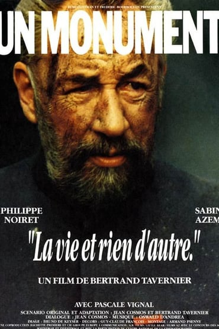

Nos toutes premières séances C-Show ont lieu dans la région Haut-de-France, et plus précisément dans la communauté de communes des Lisières de l'Oise

Rue des Carrieres, 60170 Tracy-le-Mont La vie et rien d'autre (Bertrand Tavernier)18 mai 2018 à 21h : Carrière de Tracy-le-Mont
Avec Philippe Noiret et Sabine Azema
17 rue de l'Hermitage, 60350 Autreches19 mai 2018 à 20h30 : L'Hermitage
Vous pouvez voter jusqu'au 30 avril pour choisir votre film !
2 rue de Nervaise, 60170 Tracy-le-Mont23 mai 2018 à 20h30 : L'Horloge
Vous pouvez voter jusqu'au 7 mai pour choisir votre film !
Rue du collège, 60350 Couloisy
Vous pouvez voter jusqu'au 30 avril pour choisir votre film !
26 mai 2018 à 20h30 : Complexe sportif et culturel intercommunal
Nous avons pour objectif de permettre à chacun d'organiser légalement une séance de cinéma près de chez soi, notamment dans les zones mal desservies par l'offre en salles traditionnelles.
Aujourd'hui, nous permettons aux lieux d'offrir à leur public des séances cinéma parmi notre catalogue qui compte plus de 10000 films.
CShow est un service de la société Miniplexe qui a pour principaux actionnaires Pierre Lescure, Pierre Pezziardi, Grégory Labrousse et Emmanuel Bacry